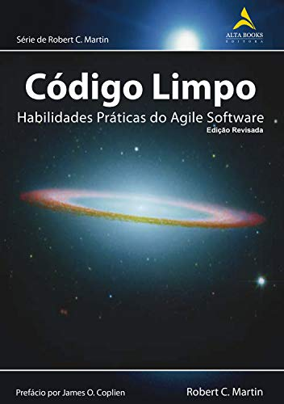
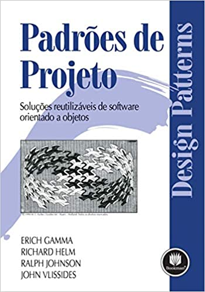

Vamos exercitar a mente com esta pequena lista de livros de programação?
| Foto | Livro | Autor | Editora | Idioma | Descrição | Ebook |
|---|---|---|---|---|---|---|
|  | Código Limpo: Habilidades Práticas do Agile Software | Robert C. Martin | Alta Books | Português | Este é um clássico dos livros de programação e todo desenvolvedor seja iniciante ou não deveria ler seu conteúdo na íntegra ao menos uma vez na vida. | Compre aqui |
| Trabalho Eficaz com Código Legado | Michael C. Feathers | AMGH | Português | Ideal para desenvolvedores que atuam com debugging, manutenção e também desenvolvem códigos do zero. | Compre aqui | |
|  | Padrões de Projetos: Soluções Reutilizáveis de Software Orientados a Objetos | Ralph Johnson, Erich Gamma, John Vlissides e Richard Helm | Bookman | Português | No livro constam os 23 padrões de design para sistemas com soluções simples e objetivas para os problemas mais comuns de engenharia de software. | Compre aqui |
|
|
Refatoração: Aperfeiçoando o Design de Códigos Existentes | Martin Fowler | Novatec Editora | Português | Obra fundamental para entender conceitos sobre refatoração, um dos princípios mais importantes de uma das metodologias ágeis mais famosas e populares no mundo. | Compre aqui |
Curtiu a lista? ;)